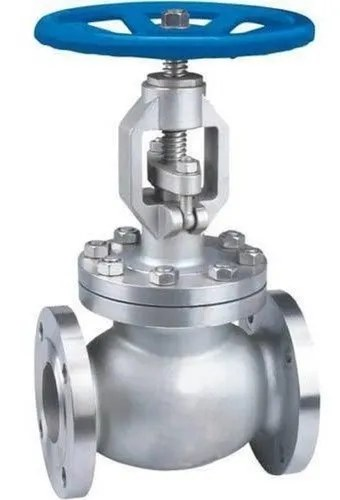
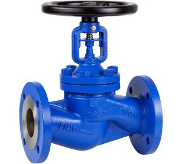
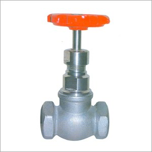
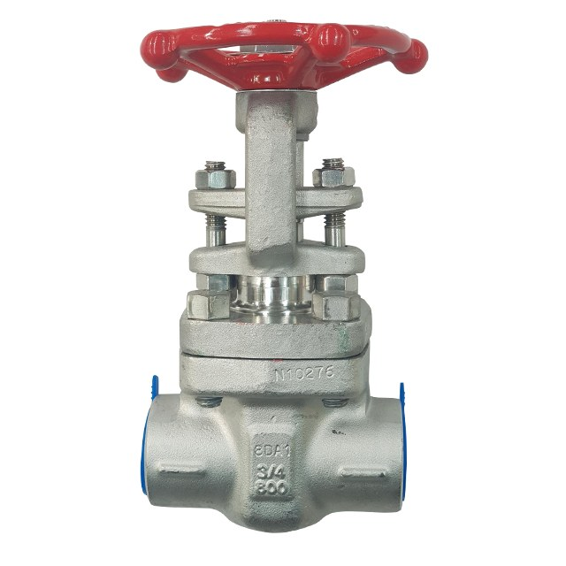
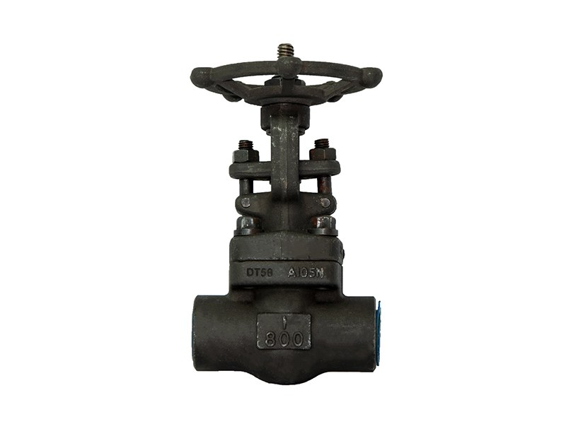

S.S GLOBE VALVE F/T
Material SS304, SS316 (ASTM A351 & ASTM A182)
Sizes ½" – 6"
- PN16
- CL150
Valves · 6 products
Throttling and flow regulation — S.S, C.S, forged steel and C.I bodies from ½" to 12". Ask Fakhri Tools for a quote on WhatsApp, by phone or at our trade counter in Al Quoz Industrial Area 3.
Material SS304, SS316 (ASTM A351 & ASTM A182)
Sizes ½" – 6"

Material CARBON STEEL (ASTM A216 WCB & A105)
Sizes ½" – 12"

Material CAST IRON (ASTM A126 & EN-GJL-250)
Sizes ½" – 8"

Material SS304, SS316 (ASTM A351)
Sizes ½" – 4"

Material SS304, SS316 (ASTM A182)
Sizes ½" – 2"

Material FORGED CARBON STEEL (ASTM A105)
Sizes ½" – 2"
Flanged (F/T) options are C.S globe valves with WCB body in CL150 and CL300 from ½" to 12", S.S globe valves in CF8M (316), PN16 and CL150, from ½" to 6", and C.I globe valves in PN16 from ½" to 8".
Screwed and socket-weld options are S.S CF8M low pressure 200# in NPT or BSPT up to 4", S.S CF8M at 600 and 800 WOG in SW or NPT, and forged steel A105N at 800 WOG in SW or NPT, all from ½".
Choose a globe valve when you need to throttle or regulate flow, for example on a bypass, a drain or a cooling water line. The flow turns inside the body, so a globe valve has more pressure drop than a gate valve. For plain on/off isolation, a gate or ball valve is usually the better fit.
For a quote, WhatsApp the size, class (CL150, CL300, PN16 or 800#), end connection, body material and quantity.
Use a globe valve to regulate flow and a gate valve for on/off isolation. If the valve will sit part-open in service, choose a globe valve.
CF8M is the cast stainless grade that matches 316. Our flanged S.S globe valve in CF8M is PN16 and CL150, from ½" to 6".
Yes. The forged steel A105N globe valve at 800 WOG comes in SW or NPT from ½" to 2". There is also an SS CF8M version at 600 and 800 WOG.
Send a photo of it, or its nameplate, on WhatsApp and we will tell you if we have it.